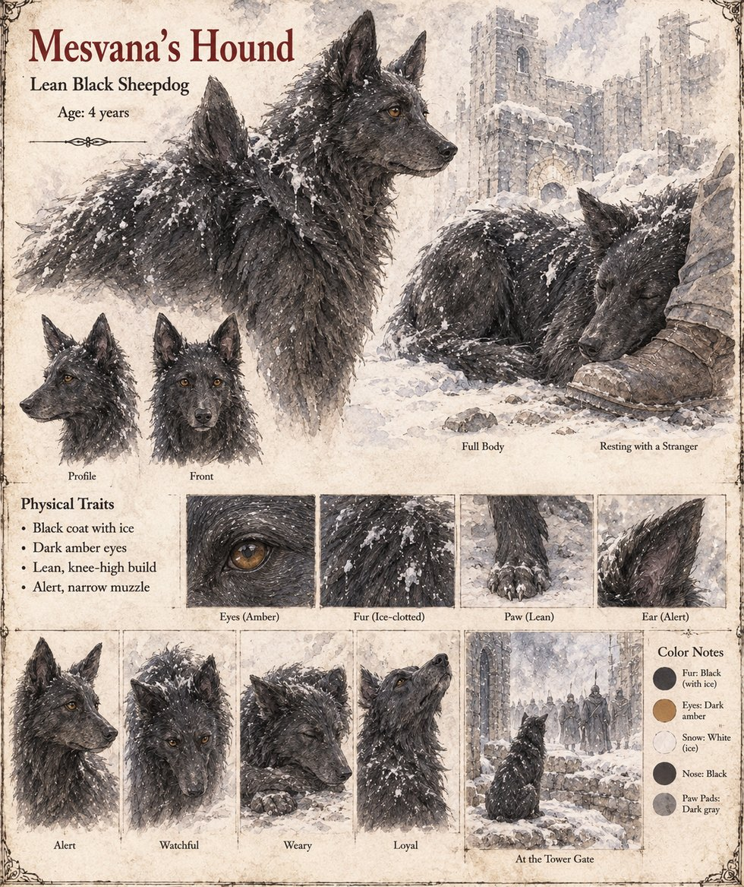

Mesvana’s Hound
A lean black sheepdog · companion of the Vintner of Mesvana · 4 years on its sheet · sheet only
The manuscript has no hound of Mesvana, and no black sheepdog; this page is the sheet’s. The only dogs the manuscript keeps are Tsitela and her line, the king’s brindled mastiff Lomi, and the nameless creatures that come to the clay bowl at the tower gate of Ormeli. Mesvana appears in it as Mesvana of the river-mills, one of the Mother’s four valleys, whose arrow is stolen from the old woman of its mill-shrine in Lorren and loosed as a fog along the pass of Dzaleti.
The sheet draws a lean, knee-high black sheepdog of about four years with dark amber eyes, a narrow alert muzzle and a coat clotted with ice, the companion of the Vintner of Mesvana in his own sheet. Its panels are Alert, Watchful, Weary and Loyal, and its scenes are Resting with a Stranger, in which it lies in the snow with its head on a stranger’s boot, and At the Tower Gate, in which it sits before a snowbound gatehouse while soldiers wait in the white behind it. The sheet does not say which tower, or who the stranger is. The manuscript has snow of its own, ten days of it, on the terraces of Ormeli in Eldren of the thirty-first year, with the king’s tents in the foothills and the king’s own dog sent up the mountain with the relief column; it has no black dog among the army or in the valley.
“Mesvana’s river-mills stood idle beside a stream that a child could cross in sandals”